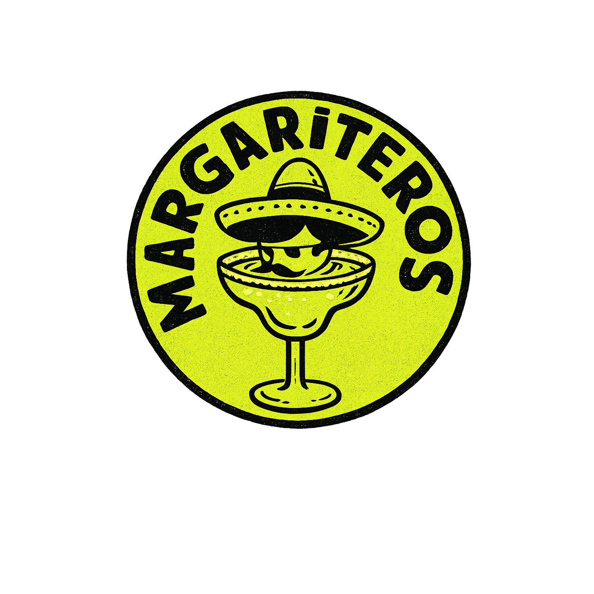

WSTAW PRAWDZIWE ZDJĘCIE
PIĄTEK
NAZWA
WYDARZENIA
WYDARZENIA

Fiesta 24/7Powtarzalny system plakatów, karuzel i Stories do składania w Canva — bez generowania grafiki przez AI.
Kliknij format, aby zobaczyć jego obowiązkowe pola.
Zdjęcie zajmuje większość kadru. Lime Fiesta działa jako podpis i rytm, nie jako tapeta.
Rytm BAJS przeniesiony do Margariteros: każda karta ma jeden temat, ale wszystkie tworzą serię.
Tekst pozostaje poza strefami interfejsu. Jeden blok informacji, bez girlandy na każdej krawędzi.
Proporcja użycia elementów w standardowym materiale.
Nie częściej niż w co czwartym materiale. Jedna noga kieliszka, bez butów.
Jeden motyw na stronę: papel picado, pociągnięcie pędzla albo cienka ramka.
Jedna informacja główna. Data i godzina zawsze razem. Brak faktu
oznacza missing.
Oryginalny pack zostaje bez zmian. Ten wybór jest krótszy i jednoznaczny.